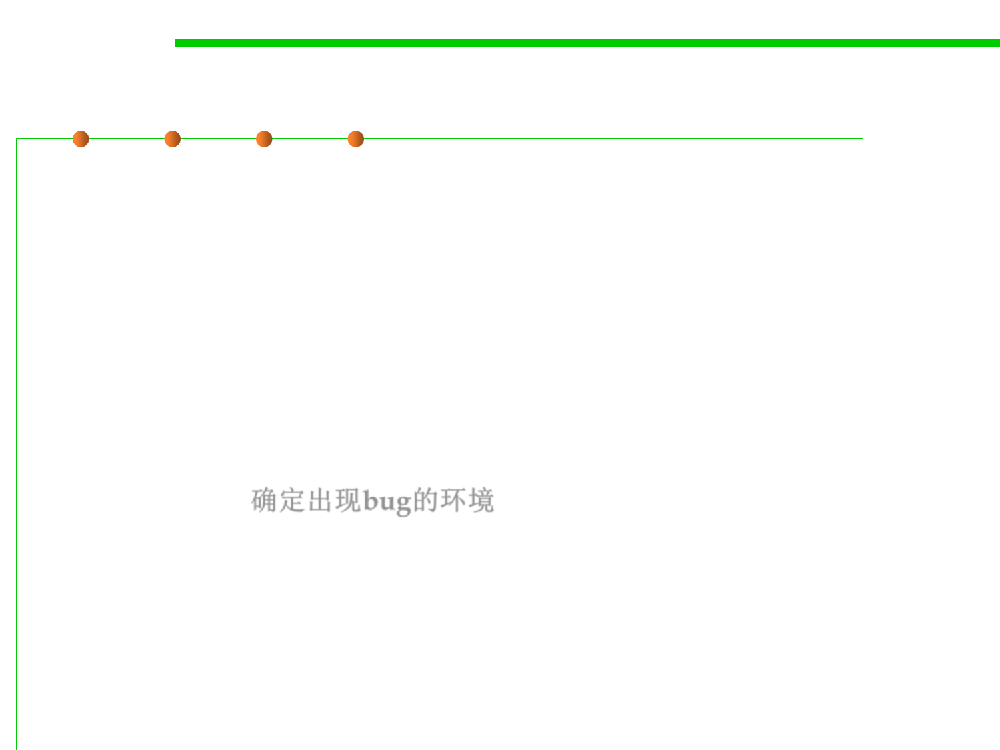

(2) Controlling the Environment
7.4 Debugging
▪ What constitutes your software’s environment depends on what
kind of software it is.
– For traditional desktop software, the operating system is probably most
relevant.
– For web software, it’s the browser.
– For network software, it’s the other software you’re communicating with,
– and for embedded code, it’s the hardware you’re interfacing with.
▪ The key in all cases is first knowing what environment the bug
manifests in. 确定出现bug的环境